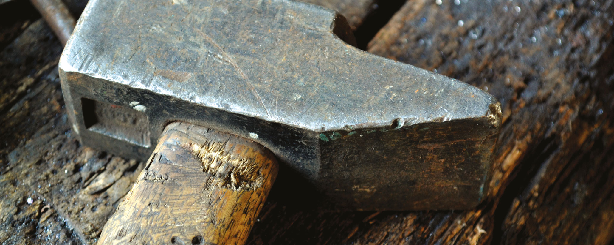

Ferronnerie d’art à Wismes
Je conçois et réalise des pièces uniques en fer forgé, sur mesure.

Le fer forgé sur mesure
Usinage · Tournage et fraisage
Distinctions et affiliation

J’ai participé au concours « Un des Meilleurs Ouvriers de France » en 1996 et en 2000.
Mon parcours à Wismes
Après douze ans comme mécanicien tourneur en entreprise, je me suis installé à Wismes en 1989. Mon père et mon grand-père y ont aussi exercé comme mécanicien et maréchal-ferrant.
Ma pièce de concours est visible à l’abbaye de Valloires, à Argoules. Elle a été exposée à la Verrerie Arc International à Arques, à la Maison Robespierre à Arras, au Village des Métiers d’Art à Desvres et à l’abbaye de Belval à Troisvaux.